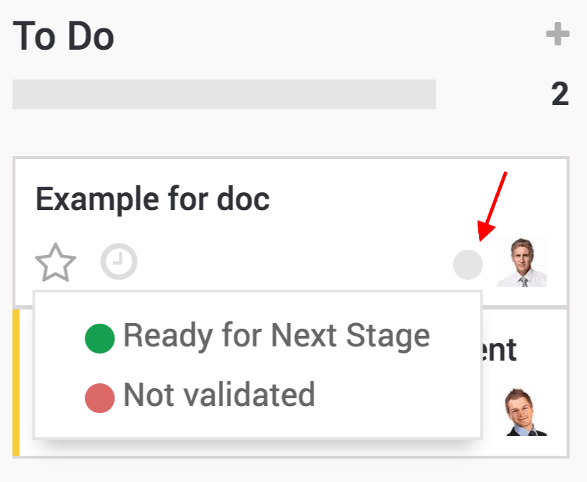
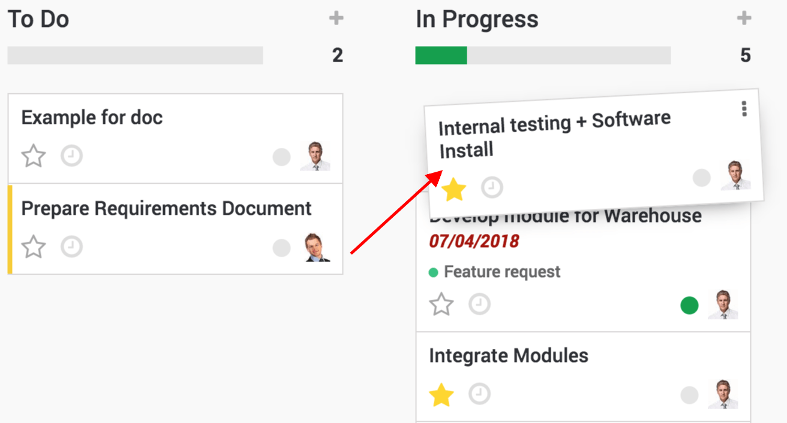

In day to day business, your company might struggle due to the important amount of tasks to fulfill. Those tasks already are complex enough. Having to remember them all and follow up on them can be a burden. Luckily, Odoo enables you to efficiently visualize and organize the different tasks you have to cope with.
Create a task
While in the project app, select an existing project or create a new one.
In the project, create a new task.
In that task you can then assigned it to the right person, add tags, a deadline, descriptions… and anything else you might need for that task.

View your tasks with the Kanban view
Once you created several tasks, they can be managed and followed up thanks to the Kanban view.
The Kanban view is a post-it like view, divided in different stages. It enables you to have a clear view on the stages your tasks are in and which one have the higher priorities.
The Kanban view is the default view when accessing a project, but if you are on another view, you can go back to it any time by clicking the kanban view logo in the upper right corner

You can also notify your colleagues about the status of a task right from the Kanban view by using the little dot, it will notify follower of the task and indicate if the task is ready.
Sort tasks in your Kanban view
Tasks are ordered by priority, which you can give by clicking on the star next to the clock and then by sequence, meaning if you manually move them using drag & drop, they will be in that order and finally by their ID linked to their creation date.
Tasks that are past their deadline will appear in red in your Kanban view.
Note
If you put a low priority task on top, when you go back to your dashboard the next time, it will have moved back below the high priority tasks.
Manage deadlines with the Calendar view
You also have the option to switch from a Kanban view to a calendar view, allowing you to see every deadline for every task that has a deadline set easily in a single window.
Tasks are color coded to the employee they are assigned to and you can filter deadlines by employees by selecting who's deadline you wish to see.

Tip
You can easily change the deadline from the Calendar view by dragging and dropping the task to another case.